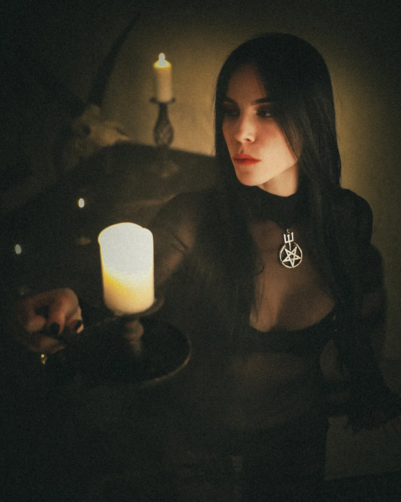
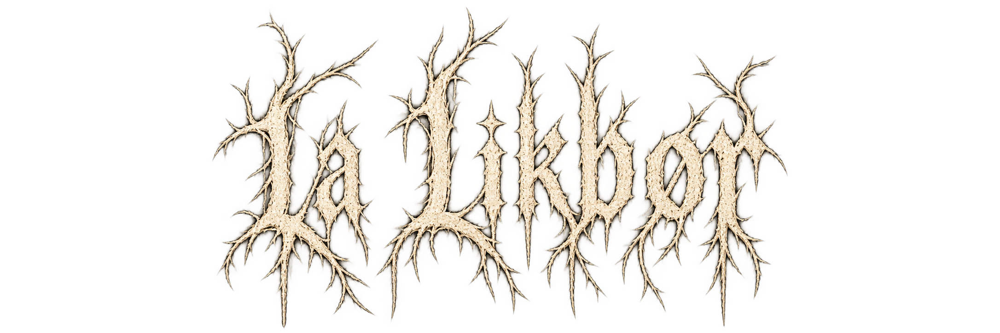

Photography
Visual places.
Different shadows.


Personal archive.
Curated garments, records
and selected objects.
Fragments / The personal archive
Visual places.
Different shadows.
Garments, records
and selected pieces.
Bands, albums.
Sounds that remain.
Selected curiosities.
A darker life.
La Likbør / Fragments
A personal archive of garments, photographs, music and objects that remain.
Homepage refined study · Logo 3 · Archive content is a preview.